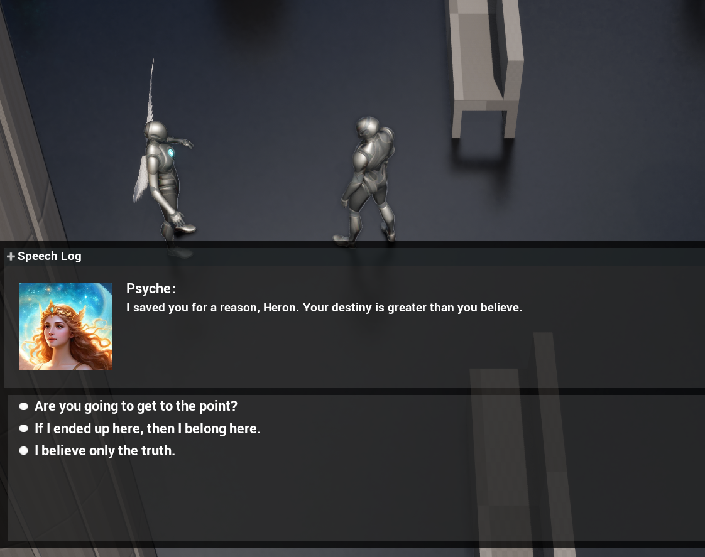

Divine Ruin
RPG Prototype
Genre: 3D RPG
Engine: Unreal Engine
Timeframe: In-Progress
Overview
Divine Ruin didn’t start as the game it is now. It began as a 2D action platformer, lots of jumping, combat, and momentum. But after getting some feedback on the writing and chatting more with my professor, I ended up pivoting hard into something else: a 3D top-down RPG, built around dialogue, narrative choices, and slower, more deliberate pacing.
The new direction made a lot more sense for the kind of story I wanted to tell, and the kind of games I love. I leaned into influences like Disco Elysium and Divinity: Original Sin 2, games where you spend more time talking than fighting, and where the story is the gameplay. Divine Ruin is still a work in progress, but it’s already helped me grow a lot as a designer.
Challenges & What Changed
Pivoting the Project Shifting from a 2D platformer to a 3D RPG wasn’t just a change in perspective; it was a total rework of the game’s identity. I felt kind of stuck for a while, unsure how to move forward, especially since I’d thrown out the more action-heavy systems I started with. But diving into research and thinking about what I wanted the player to feel helped me find my footing again. Moving into Unreal also gave me a clearer sense of tone and atmosphere, which made design choices click into place faster.
The Dialogue System: From Plugin to Blueprints
Originally, I used a third-party dialogue plugin to handle branching conversations. It got the job done...when it wasn’t crashing. And even when it worked, it felt clunky, like I was constantly working around the tool instead of with it.
Eventually, I decided to rebuild the system from scratch using Blueprints. I followed a tutorial to get started, but ended up customizing a lot of it to better fit what I needed. Not only did the crashes stop, but I finally had full control over how dialogue flowed. I could add logic, handle choices, and gate things behind variables; it just worked, and I understood why it worked. That felt good.
This shift taught me a lot, not just about how to build systems in Unreal, but about the long-term cost of relying on tools you don’t fully understand. Writing my own system took longer upfront, but it saved me time and headaches later. It also gave me the confidence to keep building things from the ground up.

Takeaways
More than anything, this project taught me how to think about dialogue not just as writing, but as a system. It showed me the difference between a tool that “sort of works” and a system that fits what I’m trying to build. It also gave me space to improve my Blueprint skills, trust my design instincts more, and start solving problems with systems that worked in the long run instead of band-aids.
Divine Ruin's still in progress, but it has already marked a turning point for me, where I started thinking more like a systems designer and became more confident in my instincts as a game designer.
Script Sample
Original Pitch